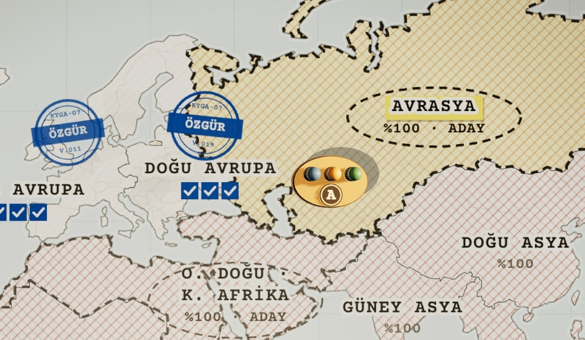
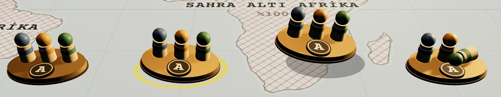

Düz jeton yerine masadaki fiziksel figür: yeri oyun durumundan gelir, elle taşınır.

BIRAK: AVRASYACephe onay fişi açılır. Enter cepheyi açar, Esc figürü geri gönderir.
K3 · ÜST HARİTA POZU · TAŞIMA ANI

HAZIRcephede, dik
ÜZERİNDE / SEÇİLİsarı halka
TAŞINIYOR25 mm havada, −6°
YARALIdüşen üye yatık
YERİ · OYUN DURUMUNDAN GELİR
hazırCephe bölgesinde, etiketin altındaki ekip noktasında (bölge verisi teamAnchor; yoksa etiket + 110 harita px).baskınFigür haritadan kalkar (sahada). Masaya dönünce sonuca göre iner.başarısızFigür 0,6 s’de S-07’ye kayar; düşen üye kadar piyon yatık, yanında “ALFA · YARALI · n GÜN”.iyileşinceVardiya dizisinde S-07’den cepheye kayar; teleks “ALFA CEPHEDE”.bölge özgürFigür özgür bölgede bekler; adaylar kesik halkayla çizilir (K3).
TAŞIMA · SÜRÜKLE VE BIRAK
alFigüre bas, 6 px sürükle (ya da 150 ms basılı tut). Geçerli bölgeler parlar, imleç el olur.bırakK3’te adaya bırakmak = o adayı seçmek: onay fişi açılır (tıklamayla aynı). Cephe açıkken (K2) yalnız kendi cephesine bırakılır; bırakınca görev fişi açılır.geçersizFigür 0,25 s’de geri kayar, teleks gerekçeyi basar:tıklaSürükleme zorunlu değil: bölgeye tıklamak ve Enter aynı işi yapar.
019/06YAPILAMADIKuzey Afrika: özgür bölgeye komşu değil
014/09YAPILAMADICephe açık: Doğu Avrupa 1/3
015/01YAPILAMADIAlfa yaralı (1 gün)
NESNE · 3D
tabanPirinç oval 70 × 48 × 6 mm · #A8844E R .5 M .7 · kenar #5C4826.piyonlar3 ahşap piyon, boy 26 mm (#C9A77A), renkli baş + bant: Teknisyen #3F5F8A · EMP uzmanı #B07A2A · Analist #3E6B4A.plakaBakalit disk Ø 21 mm #24180F, pirinç halka #C9A86A, CP 700 “A” #EFDCAE.boyutEkranda K2’de ~70 px, K1’de ~30 px. Tık hedefi en az 44 px (görünmez kutu).halka · gölgeSeçili: haritada sarı halka (Quad). Taşırken altta yumuşak oval gölge (Quad, α .28), yükseldikçe büyür ve kayar.fişte Görev fişi ve raporda aynı figürün üstten simgesi.
HAREKET · SES
al0,12 s kalkar (ahşap “tık”); imleci 0,08 s gecikmeyle izler.bırak0,15 s iner, 2 mm seker (“tok”). Geri kayma 0,25 s (kâğıtta sürtünme). Kendiliğinden taşıma 0,6 s, 10 mm yay.